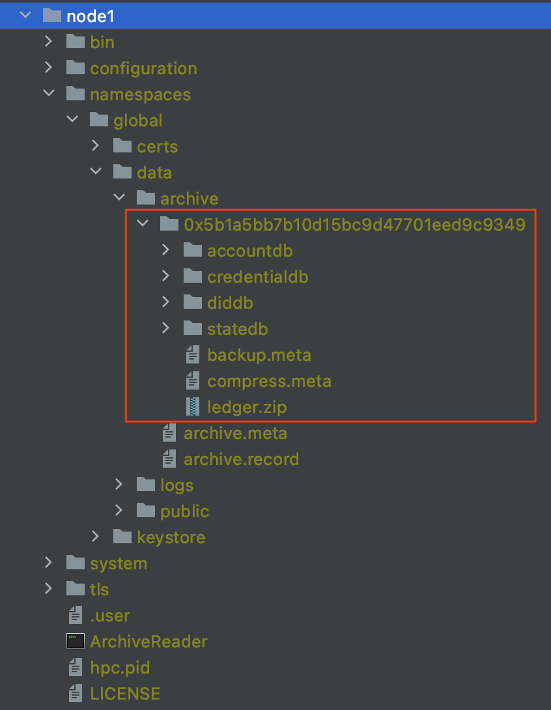
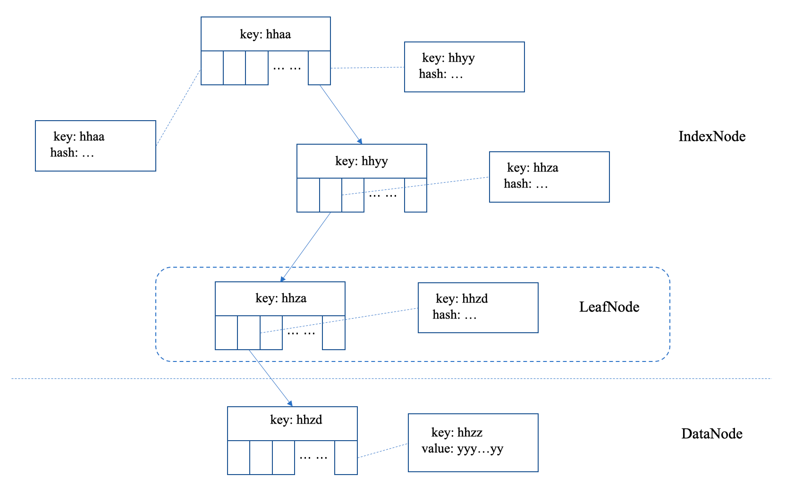

状态证明使用手册¶
1. 数据准备¶
archivereader的状态证明依赖一份archivereader维护的归档路径下的线下账本数据。即如图所示的情况：

红色方框中的数据就是状态证明所需要的数据。这份数据与hyperchain上归档产生的数据有一定的区别：
只需要账本数据即可；
ledger.zip文件需解压缩后，得到accountdb、statedb、diddb、credentialdb这四个文件夹；（backup.meta和compress.meta是因为这个路径被当成了一个hyperchainDB打开了，系统自动生成了这两个文件；当解压完成后，ledger.zip这个文件与证明过程完全无关）
因此，联动hyperchain和archiveReader，完整的数据拷贝过程应该是：
hyperchain仓库调用Snapshot接口（这一个步骤在第3章会做详细说明），制作出一个seqNo对应的照数据，这份数据在hyperchain上的路径为：
namespaces/any-ns/data/archive/any-filterID/ledger.zip；将上述的ledger.zip文件拷贝到archiveReader的相同路径下（
namespaces/same-ns/data/archive/same-filterID/ledger.zip）;在archiveReader的
namespaces/same-ns/data/archive/same-filterID路径下解压缩文件，得到如下目录结构：
namespaces/same-ns/data/archive/same-filterID/
· accountdb/
· statedb/
· diddb/(这个文件可以删除)
· credentialdb/(这个文件可以删除)
· ledger.zip(这个文件可以删除)
至此，archiveReader便可以读取到这份数据并对外提供证明服务。
2. 接口说明¶
archiveReader会新增两个api接口，用户可以通过curl的形式向archiveReader发送请求。新增的两个接口分别为：
接口名称 |
参数 |
返回值 |
|---|---|---|
proof_getStateProof |
json结构ProofParam |
json结构StateProof |
proof_validateStateProof |
true/false |
json结构ProofParam¶
案例
{
"meta": {
"snapshotID": "0x5b1a5bb7b10d15bc9d47701eed9c9349",
"seqNo": 2
},
"key": {
"address": "0x6de31be7a30204189d70bd202340c6d9b395523e",
"fieldName": "hyperMap1",
"params": ["key1"],
"vmType": "HVM"
}
}
首先，整体上上述结构包含两个子部分：meta和key：
meta的含义是这一次proof相请求涉及的是哪一个账本数据：
snapshotID：（带0x的16进制字符串）即当前账本所在的snapshotID目录；
seqNo：（uint64）因为vidb会保留最近的40个区块的数据，即假设hyperchain上在100号做了snapshot，那么在这份账本数据中61-100号的账本数据都是可查的；因此用户可以传入seqNo声明基于哪个区块的数据做证明或者验证证明；
key的结构中封装了本次proof操作请求相关的账本上的key的全部信息：
address：（带0x的16进制字符串）合约地址
filedName：（string）用于预期查询的合约中的字段名称（带@StoreField注解的合约类中的属性）
params：（string数组）为复杂的复合key准备的额外参数，具体的规则见文档（）第2.1节
vmType：（string）虚拟机类型
json结构StateProof¶
案例
{
"statePath": [{
"isData": false,
"key": "LWNvZGVIYXNo",
"hash": "M2F24RPlGgP6pdOEvFaeSaNArXvVL6/ADLekYQhIsLE=",
"inodes": [{
"key": "LWNvZGVIYXNo",
"hash": "ebbt0Gg5QYTb990MKgeD5FBmWrPIk/G0z04E77aHHj0="
}],
"index": 0
}, {
"isData": true,
"key": "LWNvZGVIYXNo",
"hash": "ebbt0Gg5QYTb990MKgeD5FBmWrPIk/G0z04E77aHHj0=",
"inodes": [{
"key": "LWNvZGVIYXNo",
"value": "8La+721N+BJDzA1KSauVKmVX+mWcd17T5eCAbwCyUwI="
}, {
"key": "LWNvZGXwtr7vbU34EkPMDUpJq5UqZVf6ZZx3XtPl4IBvALJTAg==",
"value": "ACZjb20uaHlwZXJjaGFpbi5wcm9vZi5LZXlQYXJzZXJDb250cmFjdAAAAyYAJsr+ur4AAAA0ACQKAAkAGgcAGwoAAgAaCQAIABwIAB0IAB4KAAIAHwcAIAcAIQEACWh5cGVyTWFwMQEAHUxjbi9oeXBlcmNoYWluL2NvcmUvSHlwZXJNYXA7AQAJU2lnbmF0dXJlAQBDTGNuL2h5cGVyY2hhaW4vY29yZS9IeXBlck1hcDxMamF2YS9sYW5nL1N0cmluZztMamF2YS9sYW5nL1N0cmluZzs+OwEAGVJ1bnRpbWVWaXNpYmxlQW5ub3RhdGlvbnMBACZMY24vaHlwZXJjaGFpbi9hbm5vdGF0aW9ucy9TdG9yZUZpZWxkOwEABjxpbml0PgEAAygpVgEABENvZGUBAA9MaW5lTnVtYmVyVGFibGUBABJMb2NhbFZhcmlhYmxlVGFibGUBAAR0aGlzAQAoTGNvbS9oeXBlcmNoYWluL3Byb29mL0tleVBhcnNlckNvbnRyYWN0OwEABm9uSW5pdAEAClNvdXJjZUZpbGUBABZLZXlQYXJzZXJDb250cmFjdC5qYXZhDAAQABEBABtjbi9oeXBlcmNoYWluL2NvcmUvSHlwZXJNYXAMAAoACwEABGtleTEBAAZ2YWx1ZTEMACIAIwEAJmNvbS9oeXBlcmNoYWluL3Byb29mL0tleVBhcnNlckNvbnRyYWN0AQAjY24vaHlwZXJjaGFpbi9jb250cmFjdC9CYXNlQ29udHJhY3QBAANwdXQBADgoTGphdmEvbGFuZy9PYmplY3Q7TGphdmEvbGFuZy9PYmplY3Q7KUxqYXZhL2xhbmcvT2JqZWN0OwAhAAgACQAAAAEAAgAKAAsAAgAMAAAAAgANAA4AAAAGAAEADwAAAAIAAQAQABEAAQASAAAAQgADAAEAAAAQKrcAASq7AAJZtwADtQAEsQAAAAIAEwAAAA4AAwAAAAwABAAJAA8ADgAUAAAADAABAAAAEAAVABYAAAABABcAEQABABIAAAA7AAMAAQAAAA0qtAAEEgUSBrYAB1exAAAAAgATAAAACgACAAAAEgAMABMAFAAAAAwAAQAAAA0AFQAWAAAAAQAYAAAAAgAZY29tL2h5cGVyY2hhaW4vcHJvb2YvS2V5UGFyc2VyQ29udHJhY3Q="
}, {
"key": "LXN0b3JhZ2VoeXBlck1hcDEtX19zaXplX18=",
"value": "MQI="
}, {
"key": "LXN0b3JhZ2VoeXBlck1hcDFAImtleTEi",
"value": "InZhbHVlMSIC"
}],
"index": 3
}],
"accountPath": [{
"isData": false,
"key": "AAAAAAAAAAAAAAAAAAAAAAD//wI=",
"hash": "qi/Wc2VvS62m/22FiEmCOe6zICIUokAF1s8BOKnzCnk=",
"inodes": [{
"key": "AAAAAAAAAAAAAAAAAAAAAAD//wI=",
"hash": "JO9J8Ol/DmWYFjFBMS28Ob3eFhliJ4k6TY/zAlIavJM="
}],
"index": 0
}, {
"isData": true,
"key": "AAAAAAAAAAAAAAAAAAAAAAD//wI=",
"hash": "JO9J8Ol/DmWYFjFBMS28Ob3eFhliJ4k6TY/zAlIavJM=",
"inodes": [{
"key": "AAAAAAAAAAAAAAAAAAAAAAD//wI=",
"value": "eyJBZGRyZXNzIjoiMHgwMDAwMDAwMDAwMDAwMDAwMDAwMDAwMDAwMDAwMDAwMDAwZmZmZjAyIiwiYmFsYW5jZSI6MCwibWVya2xlUm9vdCI6IjB4N2NmMDM4Y2YxMWNiM2M2ODQ4YzgxMDYzNWRlY2VmODVhMTRhYmRmYTE3MDUyMTk5NTk5NTg2ZWY2N2NlZWQ0ZSIsInR5cGUiOjEsInZlcnNpb24iOiJmbGF0b18xLjAiLCJub25jZSI6MCwiY29udHJhY3RzIjpudWxsLCJjcmVhdGVUaW1lIjowLCJjcmVhdG9yIjoiMHgwMDAwMDAwMDAwMDAwMDAwMDAwMDAwMDAwMDAwMDAwMDAwMDAwMDAwIiwic3RhdHVzIjowfQ=="
}, {
"key": "AAAAAAAAAAAAAAAAAAAAAAD//wU=",
"value": "eyJBZGRyZXNzIjoiMHgwMDAwMDAwMDAwMDAwMDAwMDAwMDAwMDAwMDAwMDAwMDAwZmZmZjA1IiwiYmFsYW5jZSI6MCwibWVya2xlUm9vdCI6IjB4ZjkyMDRhOGIzNGU0MTU1YmM1YzU1YmM3OTY2NmIyNTkxN2JlNDU5YWRkYzE1MmFkMzViYTNlM2Q2OTBmYzc3YiIsInR5cGUiOjEsInZlcnNpb24iOiJmbGF0b18xLjAiLCJub25jZSI6MCwiY29udHJhY3RzIjpudWxsLCJjcmVhdGVUaW1lIjowLCJjcmVhdG9yIjoiMHgwMDAwMDAwMDAwMDAwMDAwMDAwMDAwMDAwMDAwMDAwMDAwMDAwMDAwIiwic3RhdHVzIjowfQ=="
}, {
"key": "AAAAAAAAAAAAAAAAAAAAAAD//wY=",
"value": "eyJBZGRyZXNzIjoiMHgwMDAwMDAwMDAwMDAwMDAwMDAwMDAwMDAwMDAwMDAwMDAwZmZmZjA2IiwiYmFsYW5jZSI6MCwibWVya2xlUm9vdCI6IjB4MWQyMjk3OTVhMGVjOGJlMjU0ZDZhYThlNGRiNzE3MDI4YmVjYjM3MmMzYTY0NDQ4NWUzYTg3NzFjMzlmYTVhZSIsInR5cGUiOjEsInZlcnNpb24iOiJmbGF0b18xLjAiLCJub25jZSI6MCwiY29udHJhY3RzIjpudWxsLCJjcmVhdGVUaW1lIjowLCJjcmVhdG9yIjoiMHgwMDAwMDAwMDAwMDAwMDAwMDAwMDAwMDAwMDAwMDAwMDAwMDAwMDAwIiwic3RhdHVzIjowfQ=="
}, {
"key": "AA8aegjMxI5dMPgIUM8c8oOqOr0=",
"value": "eyJBZGRyZXNzIjoiMHgwMDBmMWE3YTA4Y2NjNDhlNWQzMGY4MDg1MGNmMWNmMjgzYWEzYWJkIiwiYmFsYW5jZSI6MTAwMDAwMDAwMCwibWVya2xlUm9vdCI6IjB4MDAwMDAwMDAwMDAwMDAwMDAwMDAwMDAwMDAwMDAwMDAwMDAwMDAwMDAwMDAwMDAwMDAwMDAwMDAwMDAwMDAwMCIsInR5cGUiOjAsInZlcnNpb24iOiJmbGF0b18xLjAiLCJub25jZSI6MCwiY29udHJhY3RzIjpudWxsLCJjcmVhdGVUaW1lIjowLCJSb2xlcyI6WyJhZG1pbiIsImNvbnRyYWN0TWFuYWdlciJdfQ=="
}, {
"key": "HcA8LJupP3nrMr7ztm9l21vtB3s=",
"value": "eyJBZGRyZXNzIjoiMHgxZGMwM2MyYzliYTkzZjc5ZWIzMmJlZjNiNjZmNjVkYjViZWQwNzdiIiwiYmFsYW5jZSI6MCwibWVya2xlUm9vdCI6IjB4MDAwMDAwMDAwMDAwMDAwMDAwMDAwMDAwMDAwMDAwMDAwMDAwMDAwMDAwMDAwMDAwMDAwMDAwMDAwMDAwMDAwMCIsInR5cGUiOjAsInZlcnNpb24iOiJmbGF0b18xLjAiLCJub25jZSI6MCwiY29udHJhY3RzIjpudWxsLCJjcmVhdGVUaW1lIjowLCJSb2xlcyI6WyJub2RlT2ZWUCJdfQ=="
}, {
"key": "Ko26LByZHefZjz9OxUMnR47FoPo=",
"value": "eyJBZGRyZXNzIjoiMHgyYThkYmEyYzFjOTkxZGU3ZDk4ZjNmNGVjNTQzMjc0NzhlYzVhMGZhIiwiYmFsYW5jZSI6MCwibWVya2xlUm9vdCI6IjB4MDAwMDAwMDAwMDAwMDAwMDAwMDAwMDAwMDAwMDAwMDAwMDAwMDAwMDAwMDAwMDAwMDAwMDAwMDAwMDAwMDAwMCIsInR5cGUiOjAsInZlcnNpb24iOiJmbGF0b18xLjAiLCJub25jZSI6MiwiY29udHJhY3RzIjpbIjB4MmVjNGZiZmNmODc1MTJjNmExZDg4OTQyMmU2MjhhYzYxNWY0ZGI5OCIsIjB4NmRlMzFiZTdhMzAyMDQxODlkNzBiZDIwMjM0MGM2ZDliMzk1NTIzZSJdLCJjcmVhdGVUaW1lIjowLCJSb2xlcyI6bnVsbH0="
}, {
"key": "LsT7/Ph1Esah2IlCLmKKxhX025g=",
"value": "eyJBZGRyZXNzIjoiMHgyZWM0ZmJmY2Y4NzUxMmM2YTFkODg5NDIyZTYyOGFjNjE1ZjRkYjk4IiwiYmFsYW5jZSI6MCwibWVya2xlUm9vdCI6IjB4MzM2MTc2ZTExM2U1MWEwM2ZhYTVkMzg0YmM1NjllNDlhMzQwYWQ3YmQ1MmZhZmMwMGNiN2E0NjEwODQ4YjBiMSIsInR5cGUiOjEsInZlcnNpb24iOiJmbGF0b18xLjAiLCJub25jZSI6MCwiY29udHJhY3RzIjpudWxsLCJjcmVhdGVUaW1lIjoxLCJjcmVhdG9yIjoiMHgyYThkYmEyYzFjOTkxZGU3ZDk4ZjNmNGVjNTQzMjc0NzhlYzVhMGZhIiwic3RhdHVzIjowfQ=="
}, {
"key": "YgHLBEiWSsWX+vb98fRy7fKiK4k=",
"value": "eyJBZGRyZXNzIjoiMHg2MjAxY2IwNDQ4OTY0YWM1OTdmYWY2ZmRmMWY0NzJlZGYyYTIyYjg5IiwiYmFsYW5jZSI6MTAwMDAwMDAwMCwibWVya2xlUm9vdCI6IjB4MDAwMDAwMDAwMDAwMDAwMDAwMDAwMDAwMDAwMDAwMDAwMDAwMDAwMDAwMDAwMDAwMDAwMDAwMDAwMDAwMDAwMCIsInR5cGUiOjAsInZlcnNpb24iOiJmbGF0b18xLjAiLCJub25jZSI6MCwiY29udHJhY3RzIjpudWxsLCJjcmVhdGVUaW1lIjowLCJSb2xlcyI6WyJhZG1pbiIsImNvbnRyYWN0TWFuYWdlciJdfQ=="
}, {
"key": "beMb56MCBBidcL0gI0DG2bOVUj4=",
"value": "eyJBZGRyZXNzIjoiMHg2ZGUzMWJlN2EzMDIwNDE4OWQ3MGJkMjAyMzQwYzZkOWIzOTU1MjNlIiwiYmFsYW5jZSI6MCwibWVya2xlUm9vdCI6IjB4MzM2MTc2ZTExM2U1MWEwM2ZhYTVkMzg0YmM1NjllNDlhMzQwYWQ3YmQ1MmZhZmMwMGNiN2E0NjEwODQ4YjBiMSIsInR5cGUiOjEsInZlcnNpb24iOiJmbGF0b18xLjAiLCJub25jZSI6MCwiY29udHJhY3RzIjpudWxsLCJjcmVhdGVUaW1lIjoyLCJjcmVhdG9yIjoiMHgyYThkYmEyYzFjOTkxZGU3ZDk4ZjNmNGVjNTQzMjc0NzhlYzVhMGZhIiwic3RhdHVzIjowfQ=="
}, {
"key": "hW4rml+oL9GwMdH/aGOGTbrHmV0=",
"value": "eyJBZGRyZXNzIjoiMHg4NTZlMmI5YTVmYTgyZmQxYjAzMWQxZmY2ODYzODY0ZGJhYzc5OTVkIiwiYmFsYW5jZSI6MTAwMDAwMDAwMCwibWVya2xlUm9vdCI6IjB4MDAwMDAwMDAwMDAwMDAwMDAwMDAwMDAwMDAwMDAwMDAwMDAwMDAwMDAwMDAwMDAwMDAwMDAwMDAwMDAwMDAwMCIsInR5cGUiOjAsInZlcnNpb24iOiJmbGF0b18xLjAiLCJub25jZSI6MCwiY29udHJhY3RzIjpudWxsLCJjcmVhdGVUaW1lIjowLCJSb2xlcyI6WyJhZG1pbiIsImNvbnRyYWN0TWFuYWdlciJdfQ=="
}, {
"key": "sYyFdeMoTnm5IQACWjE3j+uBANY=",
"value": "eyJBZGRyZXNzIjoiMHhiMThjODU3NWUzMjg0ZTc5YjkyMTAwMDI1YTMxMzc4ZmViODEwMGQ2IiwiYmFsYW5jZSI6MTAwMDAwMDAwMCwibWVya2xlUm9vdCI6IjB4MDAwMDAwMDAwMDAwMDAwMDAwMDAwMDAwMDAwMDAwMDAwMDAwMDAwMDAwMDAwMDAwMDAwMDAwMDAwMDAwMDAwMCIsInR5cGUiOjAsInZlcnNpb24iOiJmbGF0b18xLjAiLCJub25jZSI6MCwiY29udHJhY3RzIjpudWxsLCJjcmVhdGVUaW1lIjowLCJSb2xlcyI6WyJhZG1pbiIsImNvbnRyYWN0TWFuYWdlciJdfQ=="
}, {
"key": "6TuS8doI+SW97kTpHndoOAroMwc=",
"value": "eyJBZGRyZXNzIjoiMHhlOTNiOTJmMWRhMDhmOTI1YmRlZTQ0ZTkxZTc3NjgzODBhZTgzMzA3IiwiYmFsYW5jZSI6MTAwMDAwMDAwMCwibWVya2xlUm9vdCI6IjB4MDAwMDAwMDAwMDAwMDAwMDAwMDAwMDAwMDAwMDAwMDAwMDAwMDAwMDAwMDAwMDAwMDAwMDAwMDAwMDAwMDAwMCIsInR5cGUiOjAsInZlcnNpb24iOiJmbGF0b18xLjAiLCJub25jZSI6MCwiY29udHJhY3RzIjpudWxsLCJjcmVhdGVUaW1lIjowLCJSb2xlcyI6WyJhZG1pbiIsImNvbnRyYWN0TWFuYWdlciJdfQ=="
}, {
"key": "+8pqfp4pcodzsnDT8AFTx10E4a0=",
"value": "eyJBZGRyZXNzIjoiMHhmYmNhNmE3ZTllMjk3Mjg3NzNiMjcwZDNmMDAxNTNjNzVkMDRlMWFkIiwiYmFsYW5jZSI6MTAwMDAwMDAwMCwibWVya2xlUm9vdCI6IjB4MDAwMDAwMDAwMDAwMDAwMDAwMDAwMDAwMDAwMDAwMDAwMDAwMDAwMDAwMDAwMDAwMDAwMDAwMDAwMDAwMDAwMCIsInR5cGUiOjAsInZlcnNpb24iOiJmbGF0b18xLjAiLCJub25jZSI6MCwiY29udHJhY3RzIjpudWxsLCJjcmVhdGVUaW1lIjowLCJSb2xlcyI6WyJhZG1pbiIsImNvbnRyYWN0TWFuYWdlciJdfQ=="
}],
"index": 8
}]
}
上述json案例就是一个完整的“证明数据”返回值。其中包含两个字段：statePath、accountPath。
其中statePath表示的是：statedb目录对应的vidb中获取的proofPath；
相应的，accountPath表示的是：accountdb目录对应的vidb获取的proofPath；
proofPath说明：

对于vidb而言，证明路径就是由每层一个节点构成的。节点的内容定义如下：
{
// bool值，是否为数据节点
"isData": false,
// byte数组，base64编码，表示当前节点的最小的key
"key": "AAAAAAAAAAAAAAAAAAAAAAD//wI=",
// 节点的哈希值，base64编码，表示当前节点所有数据的hash
"hash": "qi/Wc2VvS62m/22FiEmCOe6zICIUokAF1s8BOKnzCnk=",
// 数组结构，每一个元素都是一个json结构：{key是base64编码的byte数组，hash是base64编码的byte数组}
"inodes": [{
"key": "AAAAAAAAAAAAAAAAAAAAAAD//wI=",
"hash": "JO9J8Ol/DmWYFjFBMS28Ob3eFhliJ4k6TY/zAlIavJM="
}],
// index表示的是在向下层寻找key的过程中，当前节点使用的是哪个位置的分支继续向下寻找的
"index": 0
}
3. hyperchain上制作快照¶
hyperchain上暴露了一个新的jsonrpc接口用于制作快照：
接口名称 |
参数 |
返回值 |
同步接口 |
|---|---|---|---|
archive_snapshot |
int-区块号 |
string-账本快照的标识ID |
是 |
hyperchain在执行命令时，会以apply journal的形式，制作出“至入参区块号执行完成时为止”的账本快照数据。该过程可以类比archive过程中的制作快照步骤。
当制作快照完成时，hyperchain节点下会新增namespaces/specific-ns/data/archive/current-filterID/目录，在这个目录下的ledger.zip压缩文件就是账本快照数据。
示例：
curl localhost:8081 --data '[{"jsonrpc": "2.0", "id": 0, "method": "archive_snapshot", "params": [123], "namespace": "global"}]'